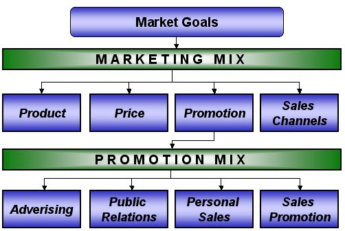

| ADVERTISEMENTS
|
HOME:
 The Institute of Practitioners in Advertising (IPA), the body which represents advertising agencies, defines advertising as: "The means of providing the most persuasive possible selling message to the right prospects at the lowest possible cost". There are five main stages in a well-managed advertising campaign: Stage 1: Set Advertising Objectives An advertising objective is a specific communication task to be achieved with a specific target audience during a specified period of time. Advertising objectives fall into three main categories: (a) To inform - e.g. tell customers about a new product (b) To persuade - e.g. encourage customers to switch to a different brand (c) To remind - e.g. remind buyers where to find a product Stage 2: Set the Advertising Budget Marketers should remember that the role of advertising is to create demand for a product. The amount spent on advertising should be relevant to the potential sales impact of the campaign. This, in turn will reflect the characteristics of the product being advertised. For example, new products tend to need a larger advertising budget to help build awareness and to encourage consumers to trial the product. A product that is highly differentiated may also need more advertising to help set it apart from the competition - emphasising the points of difference.Setting the advertising budget is not easy - how can a business predict the right amount to spend. Which parts of the advertising campaign will work best and which will have relatively little effect? Often businesses use "rules-of-thumb" (e.g. advertising/sales ratio) as a guide to set the budget. Stage 3: Determine the key Advertising Messages Spending a lot on advertising does not guarantee success (witness the infamous John Cleese campaign for Sainsbury). Research suggests that the clarity of the advertising message is often more important than the amount spent. The advertising message must be carefully targeted to impact the target customer audience. A successful advertising message should have the following characteristics: (a) Meaningful - customers should find the message relevant (b) Distinctive - capture the customer's attention (c) Believable - a difficult task, since research suggests most consumers doubt the truth of advertising in general Stage 4: Decide which Advertising Media to Use There are a variety of advertising media from which to chose. A campaign may use one or more of the media alternatives. The key factors in choosing the right media include: (a) Reach - what proportion of the target customers will be exposed to the advertising? (b) Frequency - how many times will the target customer be exposed to the advertising message? (c) Media Impact - where, if the target customer sees the message - will it have most impact? For example does an advert promoting holidays for elderly people have more impact on Television (if so, when and which channels) or in a national newspaper or perhaps a magazine focused on this segment of the population? Another key decision in relation to advertising media relates to the timing of the campaign. Some products are particularly suited to seasonal campaigns on television (e.g. Christmas hampers) whereas for other products, a regular advertising campaign throughout the year in media such as newspapers and specialist magazines (e.g. cottage holidays in the Lake District) is more appropriate. Stage 5: Evaluate the results of the Advertising Campaign The evaluation of an advertising campaign should focus on two key areas: (1) The Communication Effects - is the intended message being communicated effectively and to the intended audience? (2) The Sales Effects - has the campaign generated the intended sales growth. This second area is much more difficult to measure. |
|---|